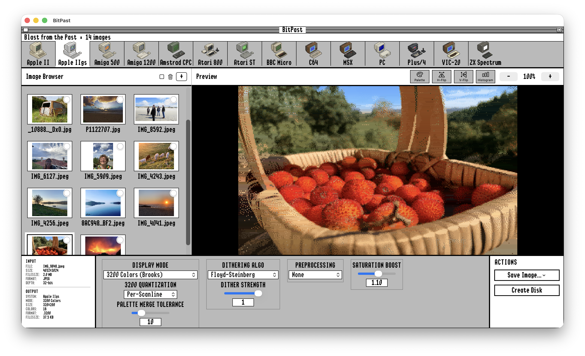
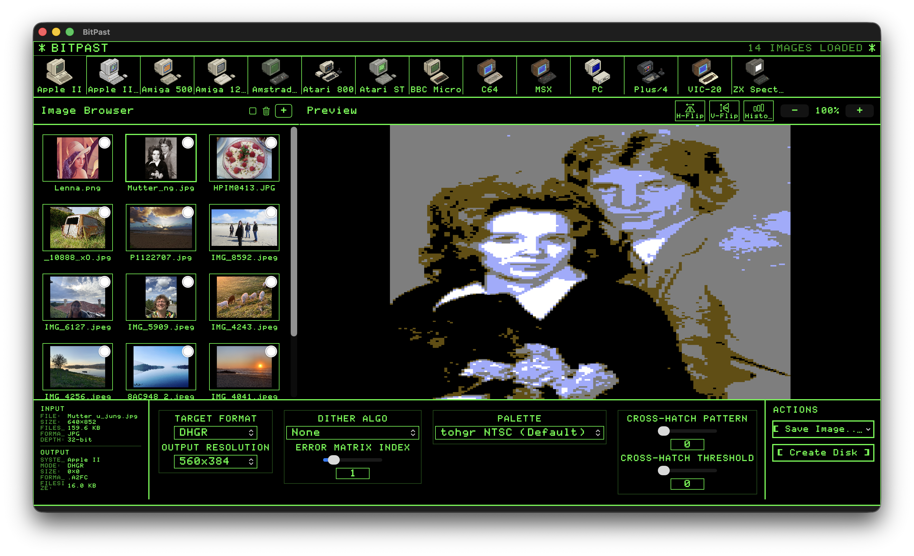
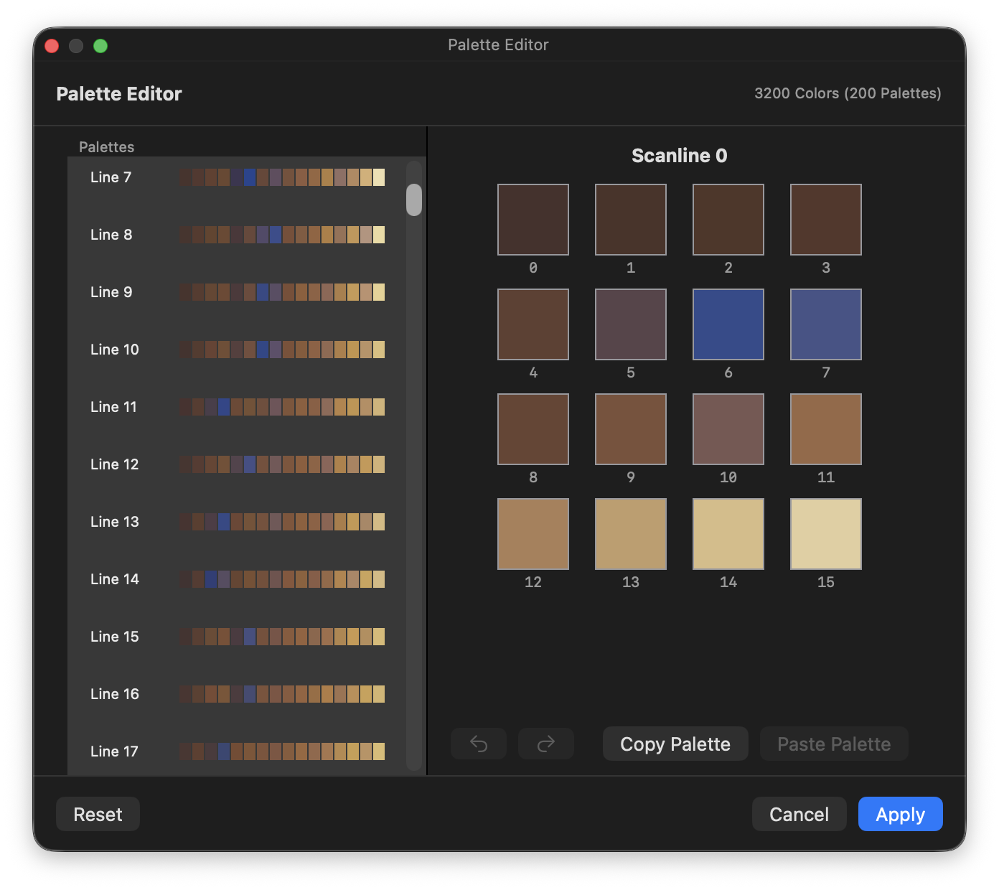

Screenshots
See the app in action

Apple IIgs 3200 Color Mode
Near-photorealistic results using all 16 palettes simultaneously. Smart scanline clustering and Median Cut Quantization deliver stunning quality.

Apple IIgs with GS/OS Theme
Convert modern images to authentic Apple IIgs 3200-color format. The classic GS/OS-inspired interface brings nostalgia while delivering professional results.

Apple II with Green Phosphor Theme
Experience the classic green monitor aesthetic. Convert images to Double Hi-Res format with authentic dithering and real-time preview.

Commodore 64 with Blue Theme
The iconic C64 blue interface. Convert images to HiRes or Multicolor mode with accurate VICE/Pepto palette and multiple dithering options.

Advanced Palette Editor
Fine-tune your conversions with the built-in palette editor. Edit individual scanline palettes for Apple IIgs 3200-color mode with full undo/redo support.